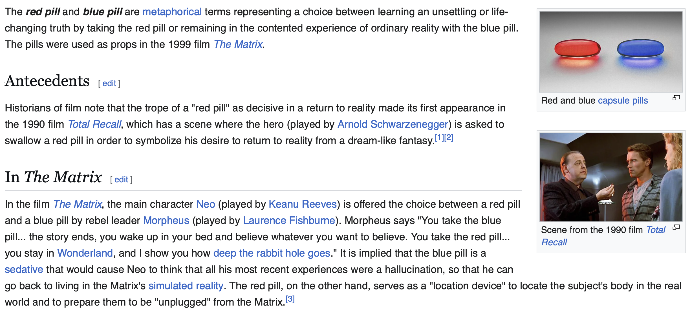

Comparative cohort methods
Biostat 218
1 Introduction
In these lectures we will learn about:
Counterfactual reasoning
Standardized comparative cohort designs
Large-scale implementations

2 Pop culture meets counterfactual reasoning

and what choice was Neo offered?
3 Red pill / blue pill

4 Counterfactual reasoning for one person

5 Counterfactual reasoning for a population

6 Sadly I do not own a Delorean
What is our next best approximation?
Randomized trial
Instead of studying the same population under both decision options, let’s define a larger population and randomly assign one treatment to each person, then compare outcomes between the two cohorts \(\ldots\)
7 Randomized trial

to approximate counterfactural outcomes
8 Randomized trial outcomes

- Randomization implies (an assumption) that persons assigned to the target (T) cohort are exchangeable at baseline with persons assigned the comparator (C) cohort
Assumption is often weakly violated in finite trials
9 Sadly we cannot randomize in observational data
- What is our next, next best approximation?
- Comparative cohort designs: between persons who made different choices
Or
- Self-controlled designs: within persons during time periods with different exposure status
10 Observational comparative cohort design to approximate counterfactual outcomes

- target (T) vs comparator (C)
- which video game is this?
11 Observational comparative cohort design outcomes

- Exchangeability assumption may be violated if there are (differential) reasons for treatment choice \(\ldots\) and there often are
- Selection bias
- Confounding (also related to outcome)
12 What is a confounder?

- A factor that simultaneously drives treatment assignment and outcome
13 Design an observational study like a randomized trial

William Cochran / Gertrude Cox, 1950, Experimental Design
Protocol components to emulate:
- Eligibility criteria
- Treatment strategies
- Assignment procedure
- Follow-up period
- Outcome
- Casual contracts of interest
- Analysis plan
14 Target trial for comparing two initial therapies

15 Obs. trial for comparing two initial therapies

16 Placebo-controlled randomized trials are hard to emulate
New-user cohort method compares
- one target (T) treatment vs one comparator (C) treatment
Hard to define a group of unexposed persons that are comparable to the exposed group
- Just ask yourself: when was I “not exposed”? yesterday? the day before?
Select comparator (C) for the same indication as T, where C is believed to have no effect on outcome (O)
- good for safety
- harder for effectiveness
17 Propensity score introduction
- Propensity score (PS) = probability \(P(A = \text{T} | X = x_i)\) of belonging to the target (T) cohort vs the comparator (C) cohort given baseline covariates (before assignment) \(x_i\) for person \(i\)
- Rosenbaum and Rubins, 1983: > 40,000 citations
- Propensity scores can be used as balancing scores: if the two cohorts have similar propensity score distributions, then the distribution of covariates should be similar (need to perform diagnostic to check)
- Prediction problem
- Plenty of machine learning approaches available
- CART, random forests, SVMs, KNN, XGBoost, deep learning
- logistic regression (regularized)
18 Proposity score intuition

19 A little theory
Propensity scoring controls for measured confounding.
If treatment assigment is strongly ignorable given measured characteristics, then propensity scoring yields unbiased estimates of causal effects.
- There are no unmeasured confounders
- Measured confounders are adjusted for appropriately
I believe these are not testable assumptions
20 Large-scale propensity scores
Traditional: select a handful of variables to use as predictors of treatment assignment (gender, age, a couple comorbidities)
Standardized OHDSI approach: use all data prior to treatment assignment
- All conditions
- All drugs
- All procedures
- All observations, etc

Fully automated, except we must manually remove target and comparator concepts from the covariates!
- the very things we are trying to predict
Only practical at OHDSI-scale via Cyclops
- To be discussed (I hope) later in course
21 Confounding adjustment using propensity scores

22 Confounding adjustment using propensity scores
- Regression adjustment: not generally recommended
- Matching: OHDSI implemented
- Stratification: OHDSI implemented
- IPW: OHDSI implemented; empirical evidence that this does not work well
Interesting, but beyond the scope of this course (ATT, ATE, etc)
Comparison demonstrating LSPS advantages
23 Matching to adjust for baseline covariate imbalance

24 Stratification to adjust for basline covariate imbalance

25 Practical issues
Exact matching (of continuous PSs) is rarely possible
Use some tolerance called a “caliper”
- Default: 0.2 on the logit-scale: Austin, 2011
Preference score (\(F\)) - scale: Walker, 2013
- Adjusts for the “market share” of the two treatments
\[ \text{logit}(F) = \text{logit}(PS) - \text{logit}(\phi) \] where \(\phi\) is the proportion of persons receiving the target treatment
If 10% of patients receive the target treatment, then patients with a \(F = 0.5\) have a 10% probability of receiving the target treatment
26 Covariate balance
PS adjustment aims to make the target (T) and comparator (C) cohorts comparable (balanced)

Rule of thumb: after-adjustment standardized difference of means \(< 0.1\) Rubin, 2001
Recent work shows that chance imbalance (smaller sample sizes) often violates \(0.1\) cutoff
27 Demonstrating LSPS modeling
- Comparing paracetamol to ibuprofen
- CPRD data source
- Propensity score matching
- 37 “publication covariates”
- Large-scale covariates (from
FeatureExtraction) - \(L_1\) regularized logistic regression
- Practical via
Cyclops

- Large-scale covariates:
- All Demographics, Conditions
- Drugs, Labs
- Proceedures, \(\ldots\)
Typically between 10,000 and 100,000 features
28 Standardized difference of means (SDM)

- Not adjusted for in manual approach
- paracetamol users are less likely to have a diagnosis of pain recorded in their data
- paracetamol users are more likely to be on cough suppressants or opiods
balances on all covariates, including manually selected ones
29 Outcome model choice defines your research question

- Usually with a single variable (treatment-effect)
- Sometimes with (large-scale) multivariable adjustment
- also possible for Cox (and Fine-Grey) models: Mittal et al, 2014 Yang et al, 2024
30 Objective diagnostics
Residual systematic error remains pervasive
- Whether study results are reliable depends on whether certain assumptions have been met
- e.g. we assume our PS adjustment makes our treatment groups comparable
- Most of these assumptions are testable through diagnostics
- e.g. we can test whether our PS adjustment achieved balance by computing the standardized difference of means (SDM)
- By objective diagnostics we mean diagnostics that are evaluated while blinded to the results of the study
- e.g. pre-specify that we will not look at results where max(|SDM|) > 0.1
- using negative controls
- Only (arguably) possible through standardization \(\rightarrow\) large-scale, repeatable
- Many T/C pairs
- Many outcomes (O) \(\ldots\) including negative control outcomes
31 Example of a negative control

From a modestly impactful study

32 Example of a negative control

in comparison to the negative control estimates
33 Negative controls in a comparative cohort study
If neither target nor comparator causes the outcome, the hazard ratio / incidence rate ratio / odds ratio should be 1
Select 50-100 negative control outcomes per study
ATLAS can help, using information (common evidence model) from
- Product labels
- Scientific literature
- Spontaneous reporting

- LLMs to parse multiple data source to expand CEM
34 How to interpret negative control findings?
Idea: use a sample (\(N > 50\)) of negative controls to understand distribution of bias
Systematic error distribution can be used as
- Diagnostic: if too much systematic error, we stop
- Calibration: can adjust \(p\)-values and confidence intervals to take into account possible systematic error
- Have a more in-depth discussion of negative controls and calibration
35 Quantifying residual systematic error

- 95% of estimates should lie above dashed line(s)
- single-line (one-sided) / V-shape (two-sided)

- EUMAEUS study
- Evaluate performance of vaccine safety designs
- Multiple designs
- Multiple vaccines
- 100 negative control outcomes
36 EUMAEUS illustration

Historical comparator: relative incidence rate btw two different populations
SCCS: relative incidence rate btw exposed/unexposed time within subject
37 EUMAEUS illustration

- SCCS \(\gg\) historical comparator
Expected absolute systematic error summarizes this distribution
- We use a prespecified EASE threshold (< 0.25) for go - no go decisions for our studies
- EUMAEUS results
- BETTER results - Bayesian extensions
38 Review
When designing or reviewing a comparative cohort study, we ask